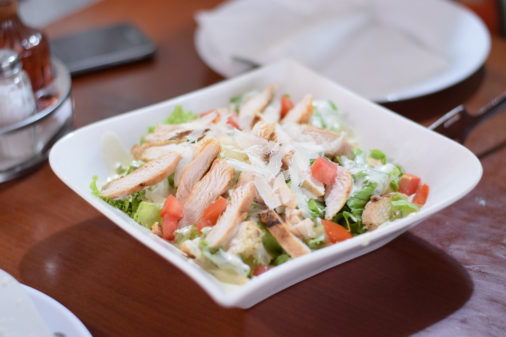

Yemek Tarifim
Ana Sayfa
Tarifler
Tavuklu Marullu ve Domatesli Salata

Malzemeler
1 adet tavuk göğsü (haşlanmış veya ızgarada pişirilmiş, küçük parçalar halinde doğranmış)
1/2 demet marul (ince doğranmış)
2-3 adet domates (küp şeklinde doğranmış)
1 adet salatalık (isteğe bağlı, dilimlenmiş veya küp doğranmış)
1/4 su bardağı haşlanmış mısır
1/2 limonun suyu
2 yemek kaşığı zeytinyağı
1 tatlı kaşığı nar ekşisi (isteğe bağlı)
Tuz (isteğe göre)
Karabiber (isteğe göre)
Yapılışı
Tavuk göğsünü haşlayın veya ızgarada pişirin. Pişen tavuğu küçük parçalar halinde doğrayarak bir kenara alın.
Marulları yıkayıp ince şeritler halinde doğrayın. Domatesleri küp şeklinde doğrayın ve salatalıkları dilimleyin.
Büyük bir salata kasesine marul, domates, salatalık ve haşlanmış mısırı ekleyin. Üzerine tavuk parçalarını yerleştirin.
Küçük bir kasede limon suyu, zeytinyağı, nar ekşisi, tuz ve karabiberi karıştırarak sosu hazırlayın.
Hazırladığınız sosu salatanın üzerine dökün ve iyice karıştırın. Servis tabağına alın ve hemen servis edin.
Afiyet Olsun!
Hafif ve sağlıklı bir öğün arıyorsanız, bu salata mükemmel bir seçim!